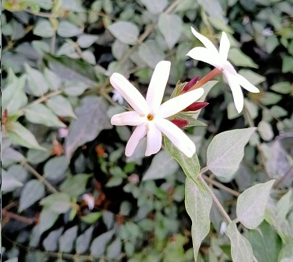
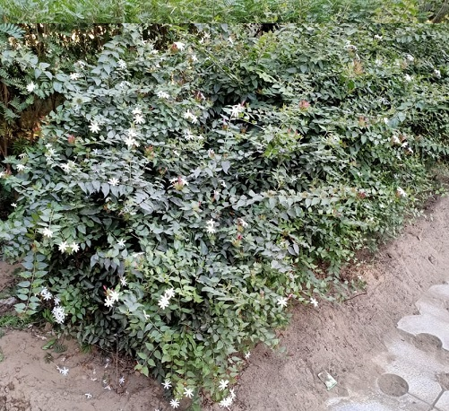

Star Jasmine
Scientific name = Trachelospermum jasminoides
Trachelospermum jasminoides is commonly grown as an ornamental plant and houseplant. In gardens, public landscapes, and parks it is used as a
climbing vine, a groundcover, and a fragrant potted plant on terraces and patios. It will flower in full sun, partial shade, or total shade, and
requires well-drained soil (if constantly kept damp it may succumb to fungal infection), moderate water, moderate fertilizer, and a climbing structure
(whether a trellis or another plant is secondary). Propagation is most commonly done with cuttings/clones.